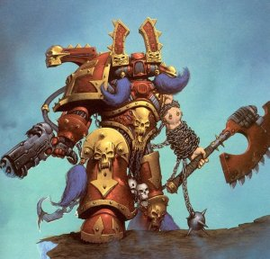

Forums galactiques > Taverne galactique : lieu de discussion informel > Machine a café [Rp!]
Pages : 1 2 ... 436 437 438 ... 443 444
| Mathilda Hanna Réputation à la taverne : 1228  03/03 ETU 22:18 | Score : 1 Détails Dans son coin, Saegmund commence à afficher une mine décomposée…
La jeune journaliste est en pleine discussion, et il n'ose pas la déranger ! Mathilda s'approche de lui et lui fait un sourire compatissant… - " Toujours le même, hein, Tonton!… Pffff, mais t'as qu'à te bouger un peu, aussi !" - " Euh, moi?… non, non, de quoi parles-tu?" répond-t-il, en sortant une pièce de sa poche, et se dirigeant vers la machine à café… - " Voilà, exactement ce que je cherchais" marmonne-t-il… De son côté, la jeune Mathilda s'approche de la journaliste afin de la saluer, et lui prenant le bras, elle la fait se pencher, puis approche ses lèvres de son oreille et murmure : - " Dîtes, toujours pas de nouvelles au sujet de ma maman?" | ||
| Mario Réputation à la taverne : 12  03/03 ETU 22:19 | Score : 1 Détails Ouf, cet alcoolique n'est pas son mari., Il se redressa lentement puis regardant les lèvres de la femme il dit, d'une voix douce:
" Je suis Mario, excusez moi gente dame j'eusse oublié la courtoisie avec cet homme. Je me chargerais de le ramener si vous le désirez. Il ne convient pas à une femme de ramener ce genre de personnage. Vous êtes donc son employé. Une raison supplémentaire qui devrait vous pousser à le laisser seul dans son ivresse. Mais que faites vous dans la vie ?" Quel idiot ! "Mais que faites vous dans la vie?" Imbécil ! T'en rate pas une. Il baissa légèrement la tête se sentant stupide. "Pardonnez mes questions mais je ne connais que trop peu de personnes ici. Alors il faut bien que je me renseigne un peu..." | ||
| Horohoro Réputation à la taverne : 1130  03/03 ETU 22:24 | Score : 1 Détails La porte de la salle s'ouvrit dans un crissement...
Une silhouette se glissa dans la pièce. Teint pâle,longs cheveux noirs, habits sombres... L'on aurait dit qu'une ombre était entrée dans la salle. Néanmoins,au vu de son apparence, l'on pouvait se demander quelle était la couleur de ses yeux, étrangement couverts d'un bandage de tissu de couleur sombre également. L'individu se déplaca droit en direction de la machine,bien qu'il lui était visiblement impossible de voir où elle se trouvait... | ||
| Mika Derdaen Réputation à la taverne : 63  03/03 ETU 22:52 | Score : 2 Détails - Dites, toujours pas de nouvelles au sujet de ma maman ?
- Oh non ma pauvre enfant... nous n'avons recu aucun appel au standard... Répond Joanne, navrée de lui apprendre que personne n'a visiblement connu sa mère et son père... Les histoires de familles, ça n'intéresse personne de nos jours... Néanmoins et avec un sourire franc, elle lui promet de continuer les recherches... Il y aura bien quelqu'un qui saura aider la malheureuse dans sa quête de ses origines... Je vous contacterai si j'ai quelque chose de neuf, promis... lui dit-elle avant de se tourner vers Mario. Enchantée et merci pour votre offre, mais je vous assure, ne vous tracassez pas, ce ne sera pas la première fois que je doive ramener mon patron... Sinon ce que je fais dans la vie ?... Hé bien je suis journaliste sur Lègie-JB, je présente entres autres le mini-journal parlé et quelques autres programmes de notre chaîne privée... et vous ? Entre parenthèses, je ne connais personne moi non plus. Et je suis bien heureuse de discuter avec quelqu'un... | ||
| Mathilda Hanna Réputation à la taverne : 1228 03/03 ETU 23:13 | Score : 1 Détails " Et je suis bien heureuse de discuter avec quelqu'un... "
Arrivé devant la machine à café, le pauvre Saegmund se fige… Il hésite, il ne sait plus quoi faire : veut-il vraiment commander un autre café? La dernière phrase de Joanne Whibren lui glace le sang, lui gèle le cœur… Ainsi donc, leur entretien n'avait été que professionnel, et rien d'autre… Il avait été bien naïf pour croire qu'il avait pu susciter le moindre intérêt ! Après tout; c'était dans l'ordre des choses ! Il commençait à en avoir l'habitude… Il regarde ses mains, elle se mettent à trembler, et il se sent pâlir… Il regarde sa montre : il est déjà plus de 23 heures ! L'heure est tardive, même si Mathilda n'a pas école demain… De son côté, l'adolescente montre une mine déçue en apprenant que personne n'avait appeler… Une grosse larme commence à perler le long de sa joue… bien qu'elle tente de se ressaisir… Voyant cela, le tuteur ne sait plus ce qu'il doit faire… Doit-il rester ici plus longtemps malgré l'indifférence que Joanne semble lui montrer? Doit-il ramener Mathilda sur Flyquist-Nÿnna et essayer de la consoler? Il hésite : dilemme entre deux attitudes et deux femmes… pour lesquelles il a beaucoup d'affection… Secouant la tête, il se ressaisit rapidement… Le choix est vite fait ! Jamais rien ne sera plus important que le bonheur de la fille de Siegfried et de Sara ! Se raclant la gorge et s'approchant de Mathilda dont il prend la main devenue froide, il l'attire à lui et la serre dans ses bras quelques instants, avant de prendre la parole : - " Veuillez nous excuser, chers commandants… mais, euh… il se fait tard ! Et la jeune Mathilda commence à être fatiguée… elle a besoin de se reposer ! Je vous souhaite une agréable fin de soirée… J'ai été ravi de vous recontrer…" Les saluant d'un hochement de tête, il pousse devant lui l'adolescente vers la sortie… Mais avant d'ouvrir la porte, il se retourne une dernière fois, s'adressant à la journaliste… - " N'oubliez pas de nous donner de vos nouvelles… enfin, euh… des nouvelles du standard, je veux dire…" Rougissant, il ouvre la porte par laquelle il sort, tenant toujours la jeune orpheline par la main… | ||
| Passage Réputation à la taverne : 125  11/03 ETU 00:04 | Score : 0 Détails Éphémère avait décidé de sortir seule, malgré les réserves émises par sa mère.
Patience est tout de même assez intelligente pour savoir qu'il n'est jamais bon de laisser quelqu'un dans un petit appartement vingt-quatre heures sur vingt-quatre. Éphémère est donc en train de siroter un jus de fruit, son chien endormi posé sur ses genoux. Elle porte un jean et une blouse. | ||
| Leorique Réputation à la taverne : 191  11/03 ETU 00:13 | Score : 1 Détails La porte s’ouvre lentement pour laisser passer un albinos insomniaque. Il secoue la tête légèrement en entrant, comme a son habitude totalement ailleurs. Il se dirige machinalement vers la machine d’un pas qui n’a pourtant rien de mécanique mais plutôt fluide et gracieux.
Il se commande un thé en revenant peu a peu a la conscience de ce qui l’entoure. Il sursaute doucement en apercevant Ephémère. « Oh , euh … Bonsoir Demoiselle, veuillez me pardonner je ne vous ai pas vu de suite » il fait une révérence un peu maladroite « Je suis toujours un peu dans mes pensées quand j’entre ici enfin ;… comment vous portez vous ? » Il prend sa tasse de thé en faisant attention de ne pas se brûler cette fois ci, quoi qu’il commence a devenir maintenant habitué avec ces tasses peu pratiques. Il souffle un moment sur son thé , observe Ephémère en souriant légerement mais chaleursement. | ||
| Passage Réputation à la taverne : 125 11/03 ETU 00:27 | Score : 2 Détails Elle lève la tête lorsque Leorique entre. Elle sourit, contente de voir quelqu'un de connu.
Le chien ne jette qu'un bref regard à l'albinos et se rendort en poussant un soupir. -Bonsoir! Tu peux me tutoyer si tu veux, on a le même âge, il me semble. Je vais bien, et toi? Sans attendre la réponse du garçon, elle se lève (en posant le chien sur le siège à côté d'elle) et va se chercher une deuxième bouteille de jus d'orange. Elle retourne s'asseoir et regarde Leorique droit dans les yeux. | ||
| Leorique Réputation à la taverne : 191 11/03 ETU 00:38 | Score : 1 Détails Leorique reste un instant interloqué et sourit légèrement
« Le même âge … ? réellement ? Ou avez vous trouvé cette information ? même moi je ne sais pas véritablement mon age précis mais enfin je suppose » il la regarde un instant un peu intimidé par le fait qu’elle le regarde dans les yeux puis hausses des épaules « Je veux bien vous tutoyer Ephémère mais … cela va prendre quelques temps, il n’y a que très peu de personnes a qui j’ai dit ‘tu’ … Je suppose que c’est étrange mais c’est ainsi pour moi, je n’arrive vraiment pas naturellement a le dire comme cela … » il se tait au fur et a mesure , se disant qu’il raconte des choses peu compréhensible pour le moment «Je vais bien on va dire, heureux de vous revoir … » il reste un instant pensif et puis semble presque rougir et ajouter précipitamment « euh … en bonne santé je veux dire … bien sur … Comment se porte Dame Patience au fait ? » il la regarde un instant comme elle le fait mais semble repris d’une crise de timidité comme ça ne lui était pas arrivé depuis longtemps | ||
| Passage Réputation à la taverne : 125 11/03 ETU 00:58 | Score : 1 Détails -D'accord...
Elle n'a pas tout compris, Leorique lui laisse un agréable sentiment de confusion. Maman va bien, elle cherche du travail, elle parle de recommencer une nouvelle vie, etc... Sans doute est-ce à cause du regard rouge de Leorique, qui la déstabilise un peu, mais peu importe la cause, les défenses d'Éphémère flanchent quelques secondes, assez pour que Passage s'insinue et murmure un mot: l'Hydre? Éphémère prend une gorgée de jus, et son chien se lève en s'étirant, fixant ses yeux noirs et humides sur Leorique. | ||
| Leorique Réputation à la taverne : 191 11/03 ETU 01:08 | Score : 1 Détails l’albinos sourit légèrement
« Encore une fois si je puis vous aider en quoi ce soit hein … vu que de toutes façon je suis trop occupé pour aider tout le monde, mais je peux quand même aider ce que j’apprécie. » il reste songeur un moment il jette un regarde interrogateur a Ephémère , a moins que cela soit l’autre ? « L’Hydre ? Rien qu’une entité spirituelle incarnée dans un corps de métal … incompréhensible a la plupart des personnes, mais pourtant plus sage et plus intelligente que n’importe qui. Elle est devenu celle qui dirige mon peuple et nous a conduit sûrement a travers les voies les plus difficiles tout en évitant les piéges. » il reste songeur en regardant Ephémère, en souriant amusé « J’imagine que je doit mal m’y prendre parce que de toutes façon personne ne comprend rien a l’Hydre quand je l’explique, de quelque manière que cela soit … » il boit la dernière gorgée de son thé l’air songeur , se yeux se posant de temps en temps sur Ephémère, distrait il tend la main vers le chien qui le regarde. | ||
| Passage Réputation à la taverne : 125 11/03 ETU 01:26 | Score : 1 Détails Pourquoi me parles-tu de ça?
Éphémère est un peu surprise mais ne s'en formalise pas. Quant au petit chien, il s'intéresse à la main tendue vers lui de Leorique. Il s'approche prudemment, la renifle un peu, donne un coup de langue et finalement, par de petits coups de tête sur la paume de la main de Leorique, signifie son envie d'être carressé. | ||
| Leorique Réputation à la taverne : 191 11/03 ETU 01:33 | Score : 1 Détails l’albinos reste un moment tout bête
« Euh , et ben …. Vous ne l’aviez pas demandé ? ha … euh … je l’ai cru … désolé …. Ça doit être la fatigué » il se sent vraiment idiot et baisse la tête presque de honte « j’ai cru entendre la question , enfin ça doit être moi donc … Excusez moi … » il soupire légèrement en secouant la tête Il caresse doucement le chien qui semble en quémander, n’osant pas trop regarder Ephémère de peur d’avoir l’air ridicule, il soupire légèrement en même temps toujours timide. | ||
| Passage Réputation à la taverne : 125 11/03 ETU 01:41 | Score : 1 Détails Je me demande comment elle s'appelle... si c'est une fille. Et comment il s'appelle, si c'est un garçon.
Elle dit cela en observant le chien. Elle lève ensuite les yeux vers Leorique, puis ramène son regard sur le petit chien blanc. Si c'est un garçon, je l'appellerai Leorique. Et si c'est une fille... Tu as une idée? | ||
| Leorique Réputation à la taverne : 191 11/03 ETU 01:53 | Score : 0 Détails l’albinos sursaute
« Euh … ? quoi … ? euh … Enfin … comment dire … L’appeler Leorique ? Euh , ben euh …. Je suis flatté si c’est un compliment mais euh ... je ne sais pas si … disons que je crois que cela me ferrait trop bizarre d’entendre une ‘Leorique au pied !’ … enfin vous voyez ce que je veux dire … ? » L’albinos reste un peu circonspect se demande si ce n’est pas une blague qu’elle lui fait « Euh , pour les noms, je n’ai jamais eu beaucoup d’inspiration quand on me le demande tout de suite comme cela … euh … enfin … » il sourit faiblement | ||
| Passage Réputation à la taverne : 125 11/03 ETU 02:15 | Score : 0 Détails Éphémère prend le petit chien dans ses mains, et se met à lui chatouiller le ventre en lui parlant comme on ferait à un nourrisson.
Hein, tu veux bien qu'on t'appelle Leorique? Hihi! Aïe! Le chien, pour s'amuser, a mordillé le doigt d'Éphémère, un peu trop fort. Méchant petit démon! Tiens, le voila ton nom, Imp! Le petit chien nouvellement baptisé la regarde en branlant la queue. | ||
| Leorique Réputation à la taverne : 191 11/03 ETU 02:27 | Score : 0 Détails l’albinos sourit légerement amusé
« hihi Pourquoi pas, c’est un nom comme un autre je suppose , oui … » L’albinos réprime un léger bâillement « Hum, pardon … la fatigue je suppose … » « Et bien voilà Imp … » il lui caresse la tête un moment puis hausses des épaules « Enfin, vous êtes insomniaques vous aussi ? même moi qui le suis j’ai bien du mal a me tenir eveillé en ce moment la … » L’albinos se cale confortablement dans son siége un instant, fermant les yeux sous la fatigue , il respire doucement, semblant comme dormir | ||
| Passage Réputation à la taverne : 125 11/03 ETU 02:33 | Score : 0 Détails Non, je ne suis pas insomniaque. Il m'arrive de veiller plus tard que d'habitude, mais je dors toujours facilement.
Comme pour confirmer ses dires, elle baille longuement. D'ailleurs je vais aller me coucher, je suis épuisée... Elle se lève, lui donne un léger baiser sur la joue et s'en va, fidèlement suivie par Imp qui trottine derrière elle. Sa silhouette s'efface lentement dans la nuit d'Ambassade. | ||
| Mystèrax Réputation à la taverne : 1216  14/03 ETU 16:47 | Score : 0 Détails Sophie arriva avec quelques minutes de retard à la Machine à Café.
Les portes de ce lieu mythique n'avaient pas été poussées depuis quelques jours, et une certaine couche de poussière avait joyeusement pris possession des lieux, en compagnie des araignées et autres insectes rampants. Sophie composa le 118 ***, et quelques secondes plus tard, une équipe de nettoyeurs vint sur place, et encore quelques minutes plus tard, ceux-ci disparurent, laissant la salle reluisante de propreté. Sophie prit un café, et s'installa confortablement sur une banquette faisant face à la porte. | ||
| Albert Simon Réputation à la taverne : 1777 14/03 ETU 16:51  | Score : 0 Détails Albert arriva dans ce lieu qui ne lui etait pas familier.
Histoire de faire bonne impression sur sophie, il avait activé l'hologramme de cet acteur du 20 em siecle terrien leonardo di proprio. Bonjour Sophie, je suis desolé, je ne pourrais pas rester longtemps.... |
Pages : 1 2 ... 436 437 438 ... 443 444
Forums galactiques > Taverne galactique : lieu de discussion informel > Machine a café [Rp!]